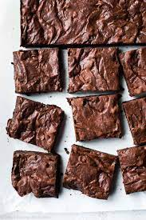
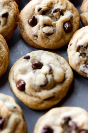
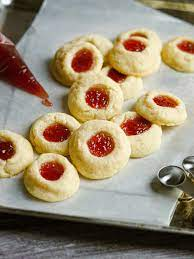

Just like the famous chocolate chip cookie these cookies were created completely by accident! Just a normal batch of cookies, but with a melted chocolate twist! The slight chocolate dough makes the chips stand out even more, and it isnt to chocholaty either! (credit: myself)
With their soft crumbly peanut butter, and creamy nutela swirls, these are out bestseller cookie, and with good reason! (credit: sallys baking addiction)
A 9 - 13 pan of delicious fudgy brownies, with your choice of add-ins, including chocolate chips, mint, or m&ms.

After all, who doesn't like doughnuts? These wonderfully fluffy pastries are incredibly delicious, and fully homemade! Deep fried in oil, with crispy outside, and fluffy inside, these doughnuts are the perfect treats for a saturday morning breakfast. (credit: golden gully)
There are many types of chocolate chip cookies, and this recipe combines the two most popular types so that you get the best of both worlds. The secret to these crispy edged, soft centered cookies is more brown sugar than white, an extra egg yolk, and melted butter. (credit: sallys baking addiction)

If you love crispy edged cookies, then these are the cookies for you! They have very crisp edges, and melt in your mouth deliciousness that makesqq you just want to keep eating them. (credit: sallys baking addiction)

If you don't think you like snickerdoodles, you will have to think again after trying these cookies. Made with browned butter, these cookies have a nutty flavor and are sure to be your new favorite cookies. \ (credit: sallys baking addiction)

You can choose between mint chocolate, or vanilla, but these cookies are delicious either way! With creamy vanilla frosting, or minty chocolate dipping, these cookies are sure to be a favorite!
.png)
These cookies have a higher price, but they are worth it! Filled with the perfect combination of sweet white chocolate chips, and salty macadamia nuts, these cookies are a true classic. (credit: sallys baking addiction)
These cookies are by far the largest cookies available, almost 3 times larger than the standard cookie! There is no shortage of m&ms thoh, as every bite is packed with a rainbow of happiness. (credit: sallys baking addiction)
Who doesn't like these frosted sprinkle covered cookies? With there unique tast and how versatile they are, its impossible not to fall in love with them. As a bonus, you can make them any shape you want! Just send us a picture or tell us! (credit: sallys baking addiction)

If you are a chocolate lover, dont feel left out! These cookies are flavored with organic cocoa, and instead of use ing a floured work surface, you use cocoa powder! (credit: sallys baking addiction)

These cookies are a perfect combination of thich, soft center, and chewy edges that can be made with raisins or chocolate chips(or none), you can decide! They also have added molasses for extra sweetness, but you can leave that out if you choose. (credit: sallys baking addiction)
Do I even have to explain it? All you ever wanted in life. with peanut butter. and chocolate. and oatmeal. And M&Ms. and a sense of fulfillment. (credit: sallys baking addiction)
Made with only five ingredients, these cookies are the definition of simplicity, soft and smooth with crisp edges, not overly sweet in the slightest.
These cookies are perfectly balanced between sweet shortbread, and fruity jams, flavored with almonds and filled with any jam you want, sure to be on your list.

Cookies aren't just for humans! These cookies are veterinarian approved, and are sure to make your dog very happy! Just be sure to make sure your dog isn't allergic to peanut butter or milk! (credit: sallys baking addiction)
The quintessential holiday cookie, these cookies have the perfect soft center and chewy edges, it you think you don't like species or molasses, you'll have to think again after trying these delicious delicacies. (credit: sallys baking addiction)
If you like chocolate, then you will love these fudgy chocolatey cookies! covered in powdered sugar and chocolate chips, these cookies are the perfect cookie to enjoy with a warm glass of milk. (credit: sallys baking addiction)
these cookies go by many names, the noel ball, italian wedding cookies, butterballs, but whatever you want to call them, these cookies are delicious. These cookies are traditionally made with various nuts, but this recipe uses cinnamon for a more festive flavor. (credit: sallys baking addiction)
No matter what time of year it is, these cookies are simply divine. Almond nut cookies sandwich, with raspberry jam (or other jams) with a hint of cinnamon? Yes please!
These soft flaky, melt in your mouth cookies are my family's favorite christmas tradition. Made with egg yolk and sugar, and piped onto trays in bite sized portions, dipped in chocolate and peppermint, these are one of the hardest cookies i know how to make, but they are very worth it!
An 8 by 13 vanilla cake, with creamy vanilla frosting. If you like your cake thick and moist, this is the cake for you. You can also order a chocolate sheet cake, or spice cake. Spice cake is a delicious cake, with a slightly cimimony pumpkin taste.
This multi layer cake is full of jucy strawberries in every bite, with creamy vanilla frosting and strawberry filling.